The big 3D round · 8 to 12 Oct 2026 · branch Harry · for Leo, Mikey and Harry
12 Oct 2026 (part 2): shop, settings clean-up, cameras
★193,000best boot in the Premier League (was ★35,000, now 30 weeks of wage, like the energy cans)
~45Settings toggles removed. The game now decides.
123→59 mcutback camera distance (coming, not on the branch yet)
7 and 5 / 60served one-on-ones and through balls with an offside team-mate (not fixed)
Not seen on a phone
Everything here is on branch Harry, not live yet. Pictures come from a build machine with no graphics chip. Items marked COMING are built somewhere else and are not on branch Harry yet.
The headline: the shop
The shop pictures are now made from the 3D shop’s own models. The new shop layout (bottom bar, For You feed, 1|3|5 items) is built but not on the branch yet. See item 1.
Check these
Shop → Cars: each car looks real and changes paint by level
Shop → Gadgets: the Charity-Shop Blazer has a tie and no price tag
Shop → Boots: prices in your division (a top boot costs 30 weeks of wage)
Settings: far fewer rows. Match → Keepers New | Old is back
Match: every player has the same sharp Style A head, no photo faces
3D match, corner: the camera starts wide and glides into the box
3D match, phone: pinch to zoom. PC: Settings → 3D match camera slider
3D penalty: the camera sits further back
COMING: bottom bar, 1|3|5 switch, For You, trophy badge, Buy button, byline glide, side-on cutbacks, tight-angle FIFA camera
1. Shop: pictures from the 3D models on branchlayout: coming
Problem
The shop pictures were home-made drawings. They looked unprofessional next to the 3D shop.
Why
The 2D shop and the 3D shop used two different sets of art.
Fix
Pictures are now rendered from the 3D shop’s own models (1440×1080, clear background).
Cars and the motorbike are repainted per level: worn, blue, red, black, gold.
SUV, jet, homes, watches, jewellery and boots show one picture for every level.
The Charity-Shop Blazer is redrawn: no price tag, a tie, lapels you can see.
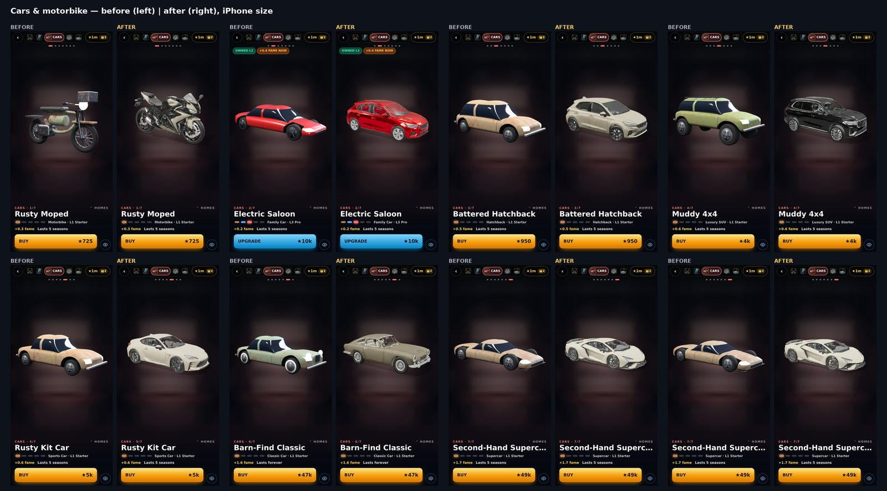
Cars, before and after, phone size. Look at the paint and the motorbike.
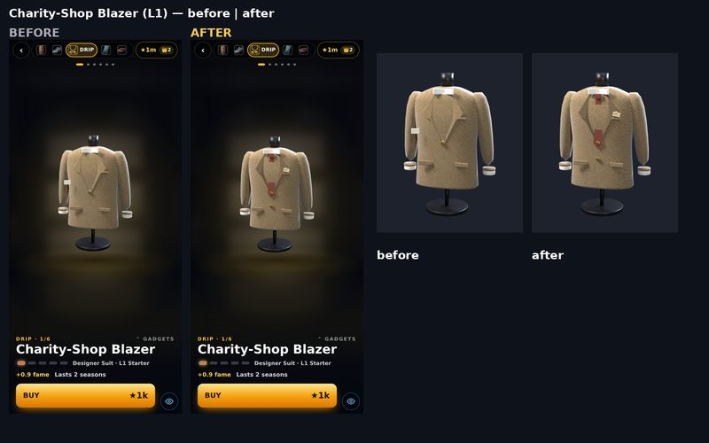
The blazer. Look at the tie.COMING: the new shop layout (not on the branch yet)
Bottom bar: Shop | For You | 3D | Boots | Sponsors. Casino leaves the bar.
1 | 3 | 5 items on screen. 3 is the default.
The shop opens on the next item you do not own.
For You: a TikTok-style feed of every item, locked ones too. Your last match’s goal highlights appear as full-screen “ads”.
Trophy badge replaces the level tabs. The badge is built but not used anywhere yet.
New Buy button.
The bar, the 1|3|5 switch and “lands on next item” are committed on a side branch. For You is not committed yet. Stills below are from that side build.
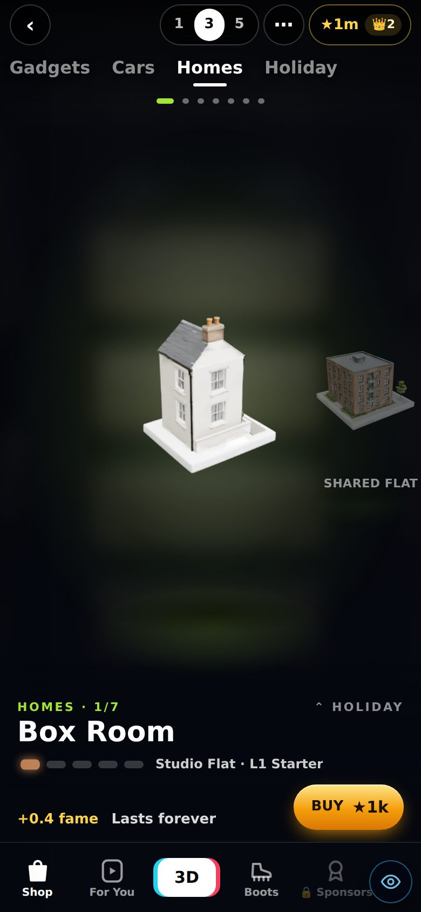
COMING: bottom bar and 1|3|5.
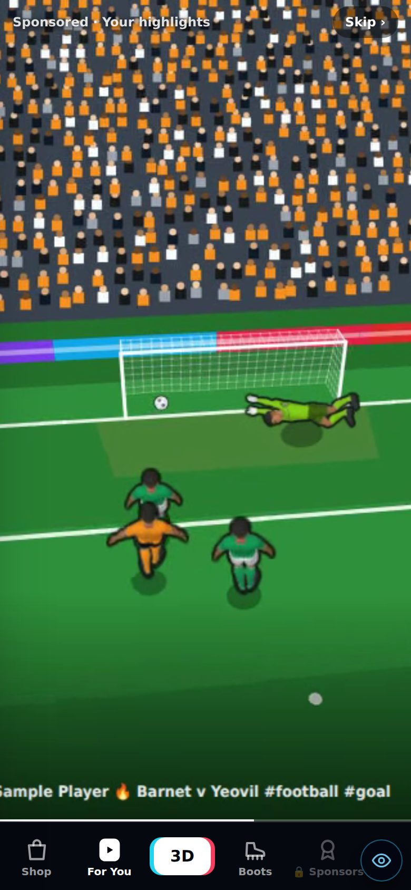
COMING: your goal as a full-screen ad.
2. Boots now cost the same share of your wage as the energy cans on branch
Problem
The top boot cost ★35,000 in every division. In the Premier League that is 5.5 weeks of wage. In non-league it is out of reach.
Why
Boots had one fixed price. Energy cans already scaled with your wage.
Fix
Price = list price × (your wage ÷ a Championship wage). The same weeks of wage in every division. A boots sponsor still takes 25% off after.
Top boot, weeks of wage (Prem)
30 5.5
Boot
Before (all)
Non-league
League Two
Champ.
Prem
NS-Pure L1
★365
★8
★25
★375
★2,000
NS-Maestro L5
★35,000
★750
★2,400
★35,000
★193,000
Known issue and how this was checked
Early-game boots are very cheap. A first boot costs ★8 in non-league. One number sets this (BOOT_PRICE_REF_WAGE). Harry decides if it feels too easy.
Worked out from the code with typical wages per division. Not played.
The Old UI shop (frozen) still shows list prices.
Stats and boot life are unchanged. Lifestyle and cosmetics are unchanged.
3. Settings clean-up: the game decides on branch
Problem
Settings had about 45 toggles for looks that were already settled. Nobody could tell which one was right.
Why
Every new look got a New | Old switch, and old ones were never deleted.
Fix
About 45 rows removed. The chosen look is fixed. Old saved choices are ignored.
Drawn chances only. The New chance library is deleted.
No Classic | Standard picker. Cut scenes are New.
Keepers New | Old stays (default New) until it is tested more.
Style A heads for everyone. Photo faces are off. Taking a photo is hidden until the photo revamp.
Player names toggle stays (off).
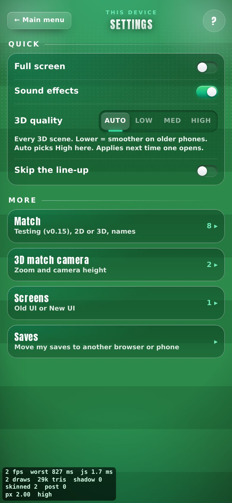
Settings now. Look at how short it is. (The numbers at the bottom are a test overlay.)
4. 3D match camera and look most on branch3 parts coming
Problem
Small players looked soft. Corners and penalties framed badly. Phones could not zoom.
Why
One camera was used for every kind of chance.
Fix (on branch)
Approved player look: sharp, thin outline (2.2 px), flat shading.
One real size: every man 1.8 m, every screen.
Open play uses exactly the 2D frame.
Corners start wide and glide into the box in 0.42 s after the kick.
Zoom: pinch on phone, slider and wheel on PC. A pinch never starts a kick.
Penalty camera pulled back: man 5.5% → 4% of the screen height.
Coming (not on branch)
Byline crosses start wide and glide into the box, like corners.
Cutbacks side-on and tighter: 59 m away (was 123 m).
Tight angles get a FIFA-style camera over the taker’s shoulder (33 m, man 49 px tall).
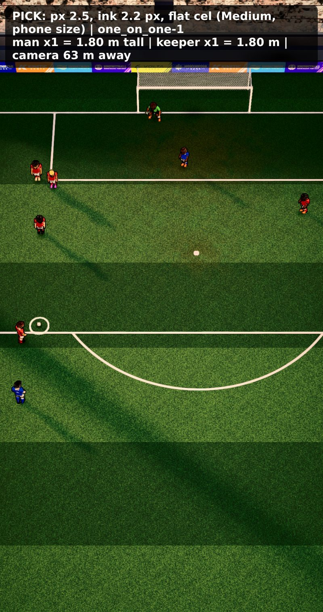
One-on-one, the approved look. Look at the thin outline on the men.
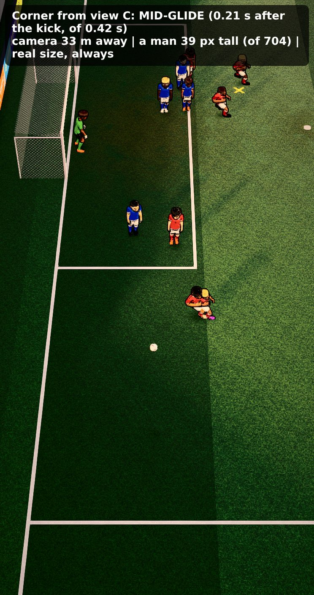
Corner, halfway through the glide.
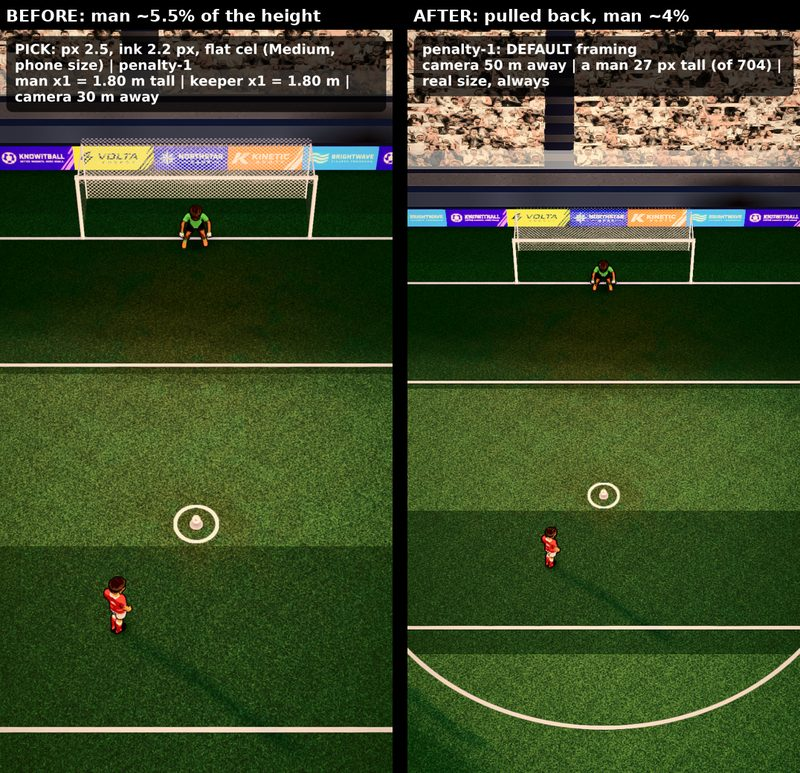
Penalty, before (left) and after (right).
COMING: byline, cutback and tight-angle stills
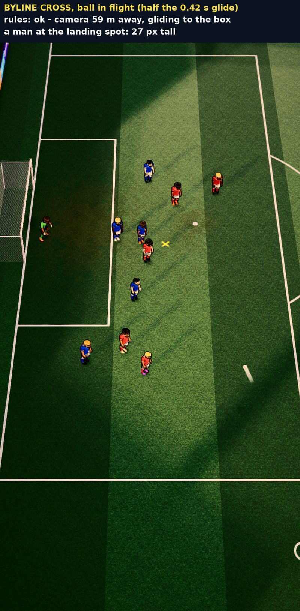
COMING: byline cross in flight.
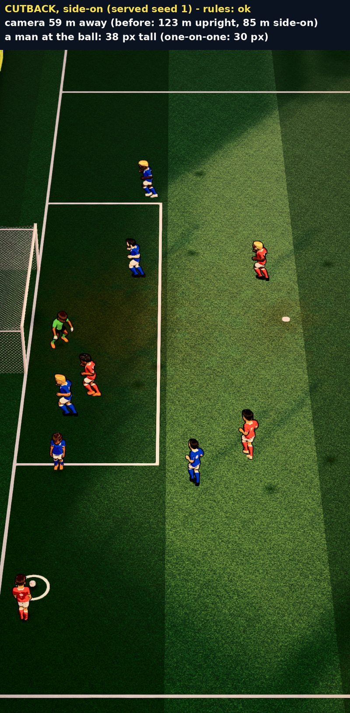
COMING: cutback, side-on, 59 m.
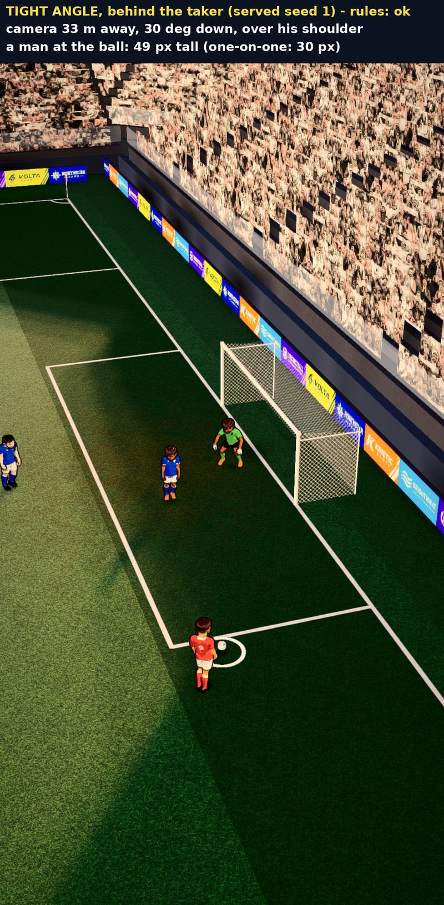
COMING: tight angle, over the shoulder.
Found, not fixed
Some served chances have an offside team-mate measured
7 of 60 one-on-ones and 5 of 60 through balls.
Garden walking is slow, and doors freeze from Mikey’s video
10 to 25 fps while walking. 1 to 3 second freezes at doors. A speed job is queued.
Early-game boots are very cheap Harry decides
★8 for a first boot in non-league. See item 2.
Rules now
Nothing goes live until Harry says so. No new version toggles: unfinished work goes on test pages.
What I saw, measured, or worked out
Seen (stills): shop pictures, settings, 3D look, corner, penalty, and the coming shop and camera stills. Measured: offside counts (60 served chances each). Worked out from code, not played: boot prices. Not seen: any of it on a phone.
12 Oct 2026, 3D match + look
82%→100%of chances where the 3D screen shows every player and post the 2D shows (78 chances)
172→33 pxhow far the 3D ball sits from its 2D spot
1.8 mevery player, on every 3D screen (was 1.8 to 4 m)
6pull requests live today (#711 to #716)
Not seen on a phone
Everything below is live, but none of it has been judged on a phone yet. Pictures come from a build machine with no graphics chip.
The headline: one size, one camera
Before, the same chance drew a man at 1.8 m, 2.4 m, 2.9 m or up to 4 m tall, depending on which camera path ran. Now every player is 1.8 m on every 3D screen. Only the camera moves. See item 4.
Check these
Career match, 3D, Low then Medium: the pitch colour and the goal net (match ⚙ sheet)
Any chance in 3D: every player and the posts are on screen, no stand in the way
3D match: each player has his own build, hair, skin and boots
Penalty and free kick in 3D: closer camera, the taker runs up from behind the ball
Keeper head is below the bar
Settings: the Old 3D camera row is gone
1. Medium and Low look better #711 #712 #713
Problem
Low quality looked flat and washed out next to High. Medium crowds and boards shimmered, and the goal net crawled.
Why
Low and Medium used cheaper colour and shadow settings that dropped most of High’s look.
Fix
Low gets High’s colour at day, golden hour and night, plus a vignette and short soft shadows. Its pitch shading and grass are closer to High.
Medium gets sharper crowds and boards, and a goal net that does not shimmer.
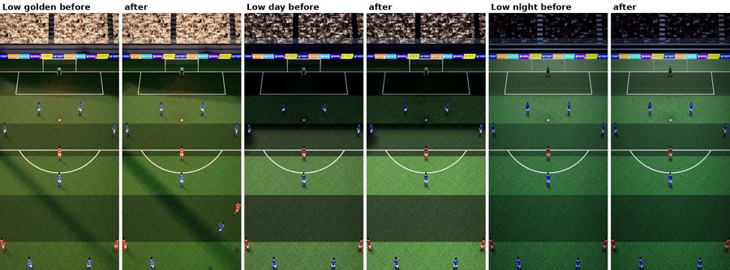
Low, before and after: golden hour, day, night. Look at the colour.
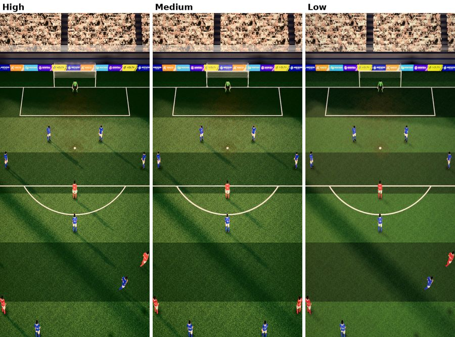
Golden hour: High, Medium, Low side by side.
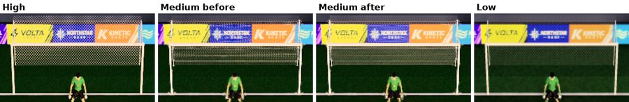
Medium goal net up close. No shimmer.
2. The 3D camera frames what the 2D shows #714
Problem
The 3D screen often left out players and posts that the 2D shows. The ball sat far from where the 2D puts it. The stand sometimes blocked the view, and a black band showed.
Why
The 3D camera chose its own frame instead of using the 2D frame.
Fix
The 3D camera now frames exactly what the 2D shows. Style A players with the Home player’s look are the default in the 3D match, and each player has his own look (build by position, hair, skin, boots). 3D quality is now in the match ⚙ sheet.
Everything in frame
100% 81.9%
Ball off its 2D spot (px)
33 px 172
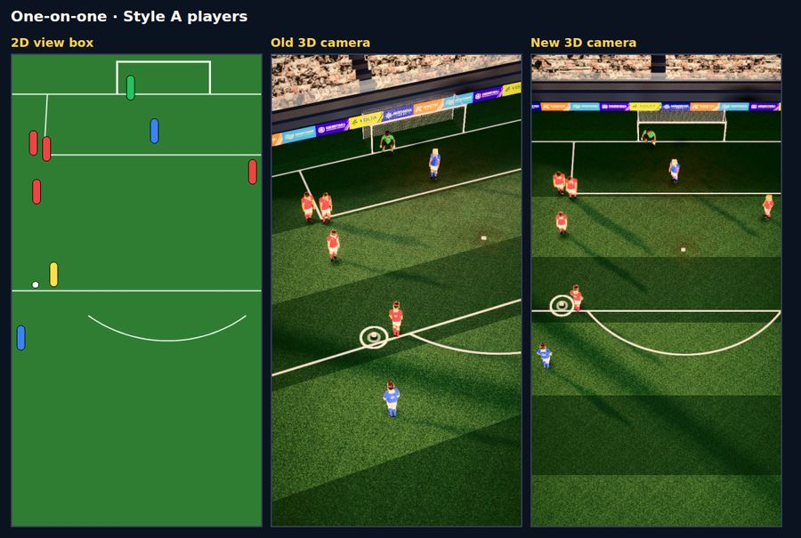
One-on-one: 2D, old 3D, new 3D. Look at who is on screen.
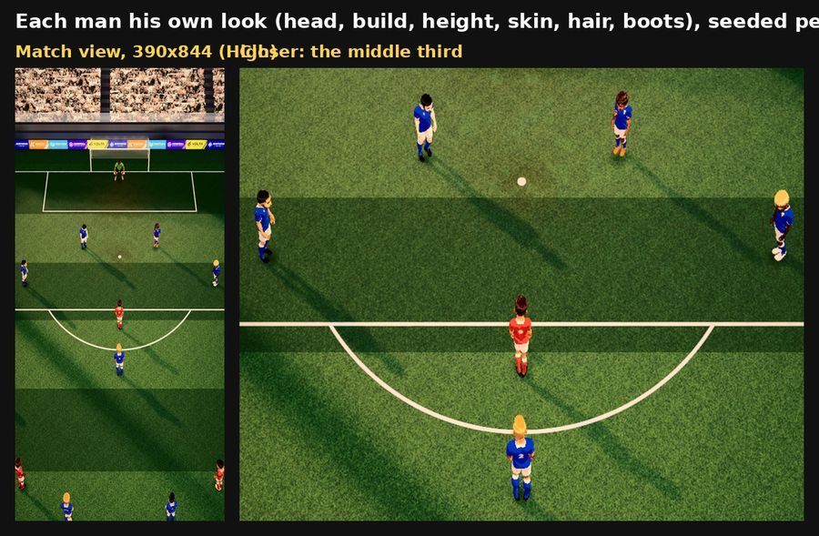
Each man his own look in the match (High).
3. Real sizes and set pieces #715
Problem
The keeper’s head showed above the crossbar. Penalties and free kicks were far away. The penalty taker stood beside the ball. Players looked soft on Medium.
Why
Men, keeper and goal were scaled by separate rules that did not agree.
Fix
Everyone is real size now, so the keeper’s head is under the bar.
Penalties and free kicks get a closer camera (taker about 5.5% of the screen, goal, keeper and wall kept).
The taker stands behind the ball and plays the real run-up and strike.
Players are sharper on Medium.
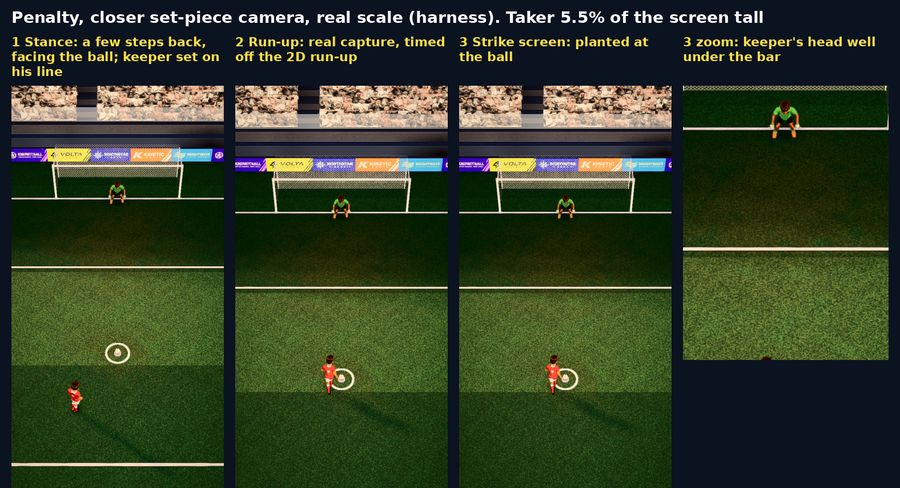
Penalty, closer camera. Look at the keeper under the bar.
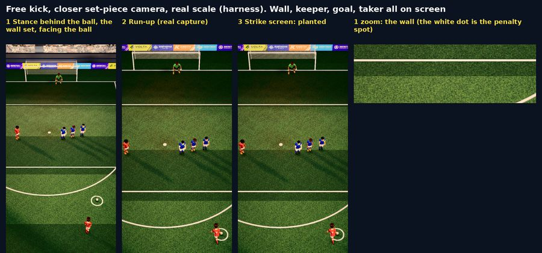
Free kick: wall and goal still in frame.
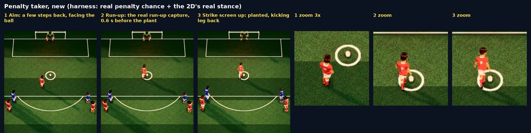
Taker: stance, run-up, strike.
4. One real size everywhere, one camera #716
Problem
The same chance drew a man at 1.8 m, 2.4 m, 2.9 m or up to 4 m tall, depending on which camera path ran. Two cameras and a Settings row (Old 3D camera) made it worse.
Why
Size was tied to the camera and the screen, so each path scaled the men differently.
Fix
Every player, keeper, ball and goal is one fixed real size on every 3D screen. Only the camera moves. The Old 3D camera setting and the extra cameras are gone. A test fails if any size ever follows the camera, screen or chance.
Man height, old camera (m)
1.8 2.88
Man height, broadcast (m)
1.8 2.43
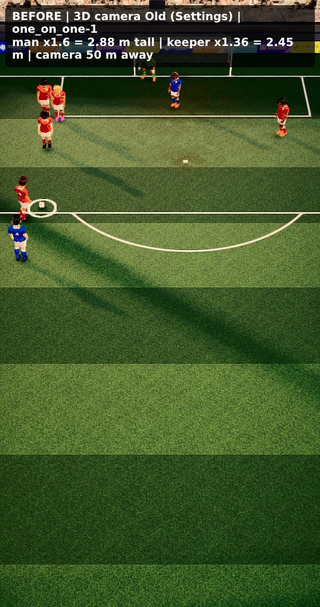
BEFORE, old camera: man 2.88 m, keeper 2.45 m.
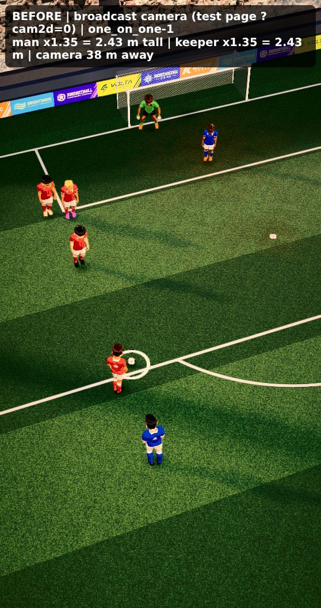
BEFORE, broadcast camera: 2.43 m.
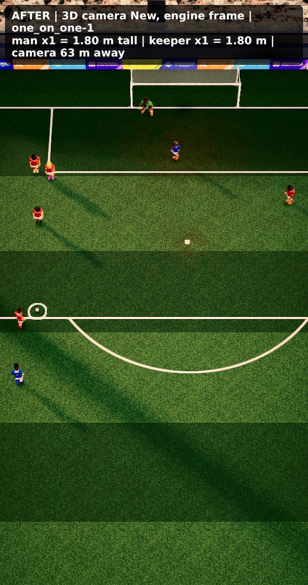
AFTER: 1.80 m, same chance.
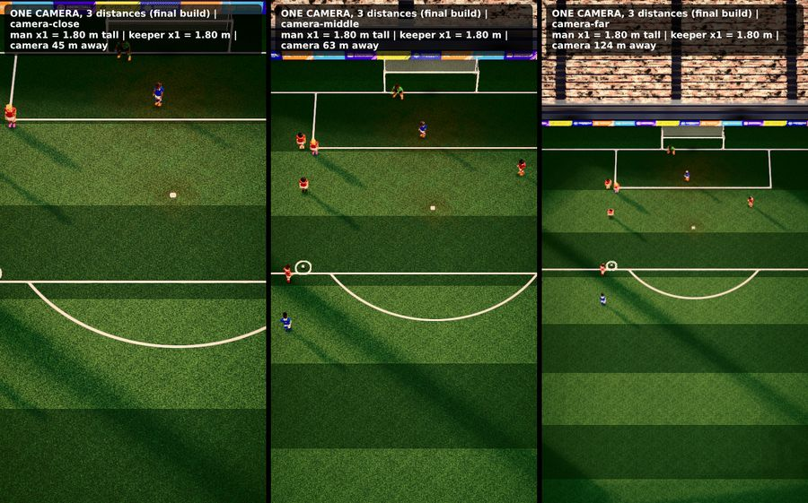
Camera close, middle, far: the camera moves, men stay 1.8 m.
Coming next, not live yet
New shop layout
Bottom bar, 1|3|5, For You, trophy badge, Buy button. Not on branch Harry.
Byline glide, side-on cutbacks, FIFA tight-angle camera
Offside team-mate fix, garden speed job
2D keeper and goal scale fix
Previous versions
The earlier rounds are kept below, unchanged.
8new stylised people (6 players, 2 managers in suits)
232k→46kshadow triangles drawn each frame in the career match
61%→83%of the time the ball is in frame in Free Roam
29%→94%of the shop screen used by items (best new layout)
Not seen on a phone
Nothing from this round has been judged on a phone. Pictures come from a machine with no graphics chip.
For Leo & Mikey
Merge main to get everything. For 3D work, paste this to your Claude:
# 3D work on Knowitball: read first
Before anything: merge main into your branch (git fetch origin main && git merge origin/main).
Then read docs/3D_HANDBOOK.md and .claude/skills/3d-building/SKILL.md.
## Golden rules
- Merge main first, every session.
- Every GLTFLoader must call withMeshopt (lib/star/three3d/meshopt.ts).
- Every new 3D file needs a POLICY line in scripts/perf3d/shrink-models.mjs.
- Every new look gets a New | Old toggle (lib/star/gameVersions.ts). Old stays frozen.
- The 2D match is the brain. 3D only draws what it decides.
- Fully 3D games own their physics in lib/star/play3d. Never import lib/star/canvasEngine.ts.
- Never touch the one-engine guard lists (KNOWN_COPIES, CEILING, canary).
- No real brands. No new realtime lights.
## Where things live
- Tools and sources: tools/styletest, tools/modeltest, tools/models3d, tools/anims3d, tools/mocap3d
- Finished 3D files: public/star/...
- Commit your sources under tools/<area>/ with a README. Scratch folders are lost.
## Open jobs
See the "Handover (9 Oct)" section of docs/3D_HANDBOOK.md.
Higgsfield
Higgsfield login
haluvowry@gmail.com
Shared account, about 167 credits left. Keep at least 60 for each other. Ask Harry for the password (never write it anywhere). Used for item 3D models, concept art and UI art.
Hourly update
LIVE: lag pass 4 live
Scenes load only the heads they show (8 → 3–5). Bench "GET OUT THERE" freezes are split into slices (after-number not measured yet). Faces kept full quality, because packing turned them grey.
Career 3D, 2nd visit (s)
~3 5.7
Drill ready (s)
5.2 6.5
Cut scene ready (s)
4.4 5.7
Memory per body (MB)
2.8 11
Human model (MB)
13 50
Garden late shaders
5 22
LIVE: every house size has its rooms live
Camera further back and higher, never through walls. Sofa with shape and cushions. Each room opens on a set shot until you move.
Villa: garage (your cars as full-quality models, glossy paint, a bike) and a games room (pool table).
Estate: cinema (your club badge on screen, starry ceiling), gym, garden terrace (jet, horse, fountain).
Penthouse: terrace with skyline and a car behind glass. Flat: hallway nook.
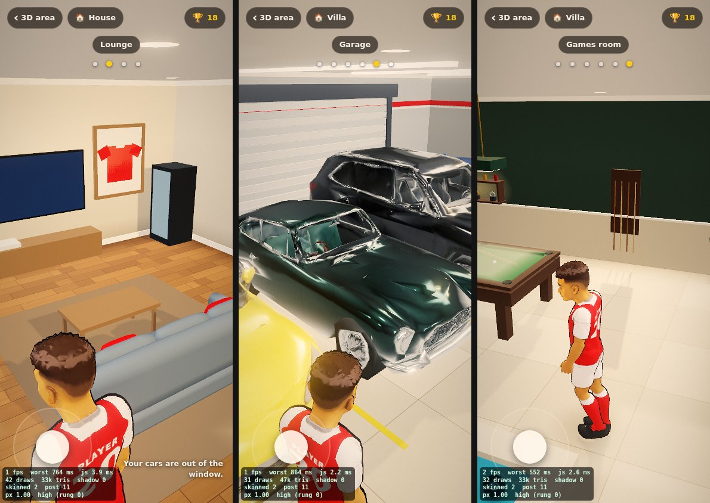
Villa.
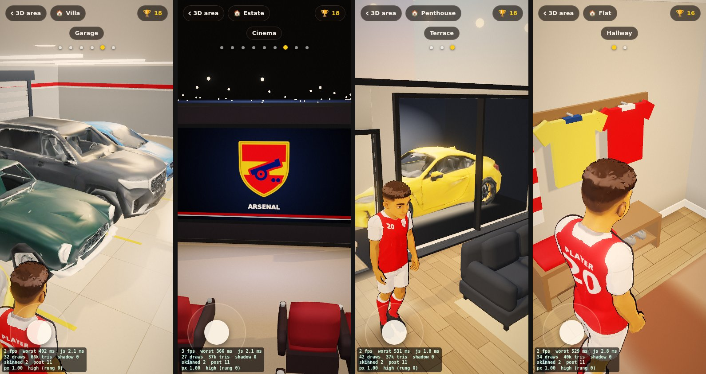
Estate.
LIVE: loading times cut live
Home no longer flashes the old flat figure. The Showroom boots "green blob" is gone.
Casino open (s)
7.2 20.3
Garden (s)
12.3 19.1
3D shop memory (MB)
103 288
Pictures (MB)
1.4 20.6
Garden server trips
2 37
The ball picture went from 1,035 KB to 11 KB.
LIVE: a house with 4 rooms you walk through live
The House-size home has a hallway, lounge, dressing room and trophy room. One is built at a time, with a short fade at each door and dots to jump. Your kits, watches, cans, wardrobe, suit and trophies fill them. Settings → Look → "House: New | Old".
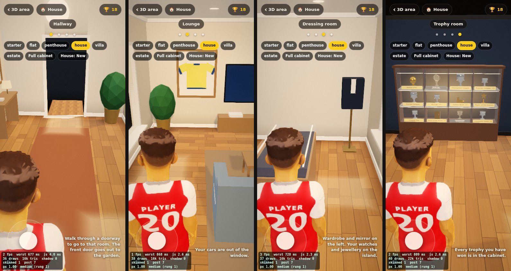
The four rooms.
LIVE: clean animations in every mode live
Drills, garden, shop, house, casino. Sprint no longer starts on the wrong foot.
Move-change pops
0 4
Foot slide (cm/m)
5.0 7.1
Worst foot slide
14.5 32.3
About-turn, per frame
10.8° 90°
Style A sprint lean
14.8° 20°
About-turn now settles in 0.37 s. The worst pop before was 53° in one frame; now there are none.
LIVE: keeper dives and slides are smoother live
Biggest one-frame snap in all 9 keyed clips: 86–90° → 32–41°.
LIVE: Style A kit live
Name and number placed right on all six heads and builds. Small chest number, weave, seams, collar, cuffs. 24 clubs get stripes, hoops or sleeves.
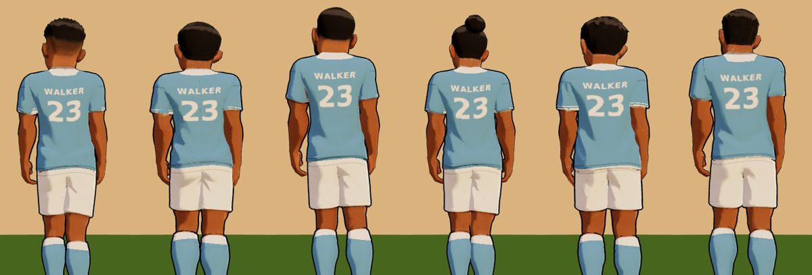
Kit backs: name and number.
LIVE: cut scenes get a camera and music pass live
Wide, then over-shoulder, then prop or face. Weak moves hidden within 1 s. No face fills the frame. Farewell has its own stadium scene. 5 music beds made in code (not yet listened to). Settings → Look → "Cut-scene camera: New | Old".
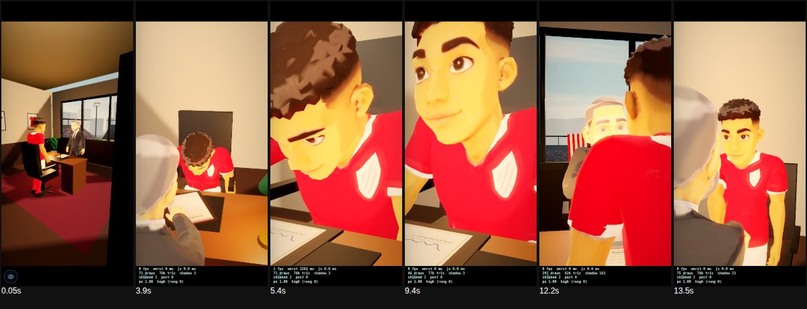
Signing scene, new camera.
LIVE: faster app start live
3D scenes can no longer hang on the spinner.
First download (MB)
0.94 1.6
First button (s)
2.7 3.6
Kick-off (s)
0.8 1.7
Worst ball-flight frame (ms)
83 150
LIVE: lag pass 3 (memory halved) live
Career match memory 149 MB → 72 MB. 3D effects are prepared up front, so the first shot no longer stutters.
Match memory
72 MB 149
LIVE: all 186 shop pictures redone live
Sharp pictures in Showroom + Feed. The card now says "3D model · level N shown".
LIVE: 2D Style A sprites are the default live
Settings → Look → "2D players: Style A | Current". Classic keeps Current. Casual clothes in the house keep the Style A body.
In progress: cut-scene camera and music
Wide, then mid, then close in each scene. The trophy close-up face is smeared; being fixed. House expansion is queued after these.
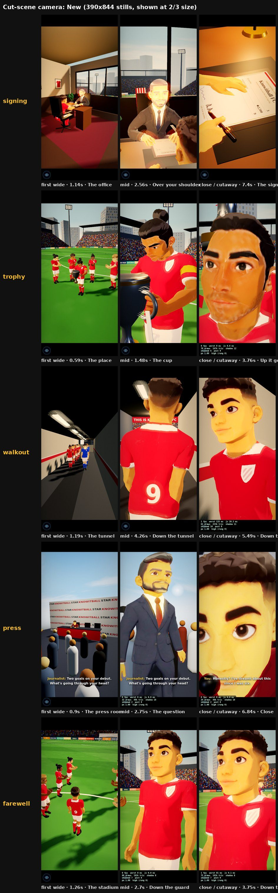
Cut-scene camera pass, work in progress.
LIVE: Showroom + Feed is the New shop live
Swipe up/down for category, sideways for item. Items fill 94.5% of the screen (was ~30%). 2 taps to buy. All 186 item pictures are sharp 1440×1080.
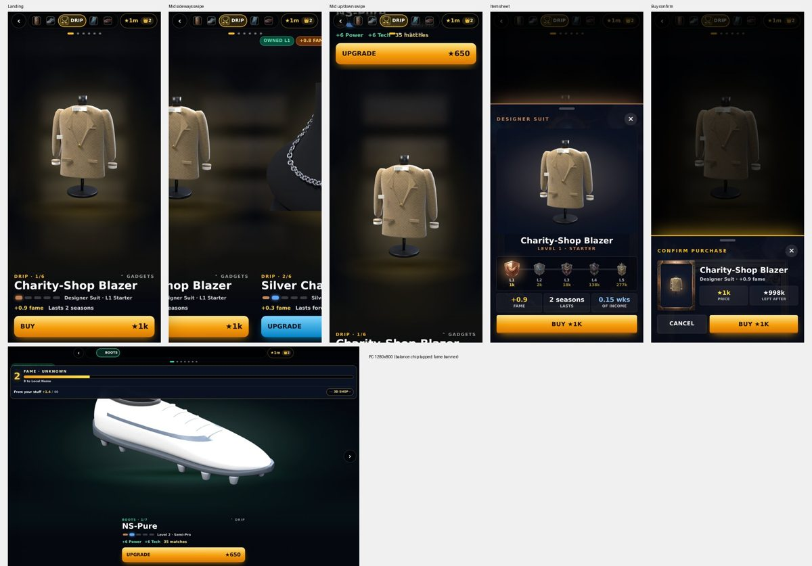
The new shop.
LIVE: Style A is the player look everywhere in 3D live
Glow bug fixed. Casual clothes in the house keep your Style A player.
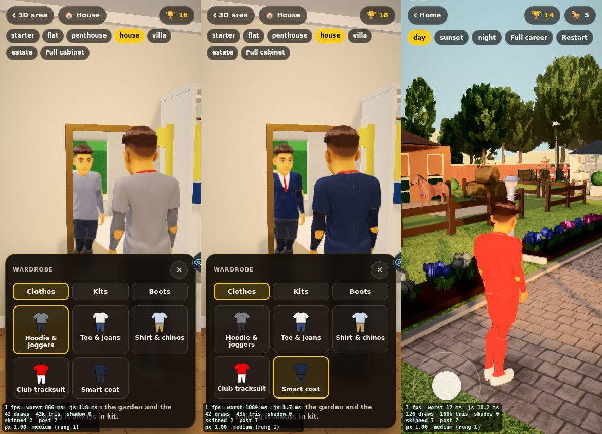
House wardrobe with the Style A player.
LIVE: the 2D match uses Style A players by default live
It falls back to 2D with an amber "3D ↻" button to retry.
In progress
Lag fix (chance-start freezes and memory). Style A kit: number on the upper back done, fabric texture next. Re-check of every place.
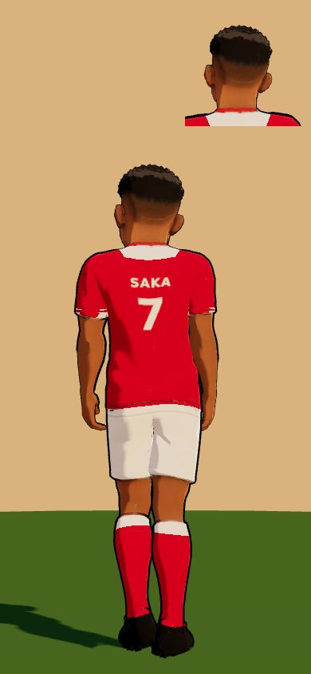
Style A kit, back.
LIVE now: the big merge
Career 3D camera (6%, 48–50°), 3D | 2D button and cog, Free Roam call, your house, speed pass 2, new Home screen.
Style A: glowing squares fixed fixed
Light gave full strength at grazing angles, making white edge pixels that the glow effect blew up. Fixed version is now live.
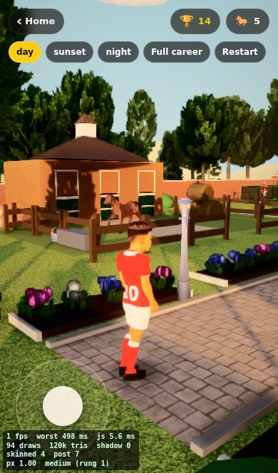
Garden, Style A, no specks.
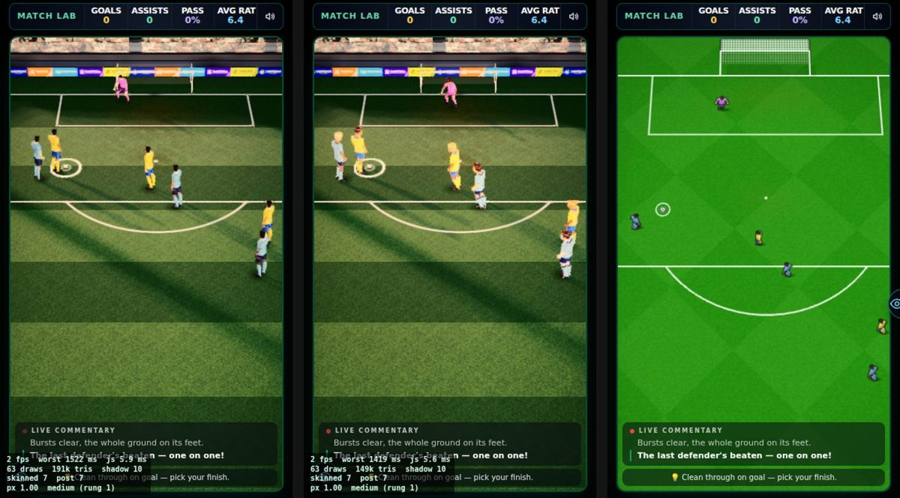
3D Old, 3D Style A, 2D Style A.
This round (9 Oct)
Style A: every 3D person has the new look
Eight stylised heads (two managers in suits), fixed hands. Everywhere in 3D, plus Home and title. Old saves get a head automatically.
Triangles / person
14.5k 20.9k
Idle wrist bend
8° 22°
Idle elbow bend
13° 27°
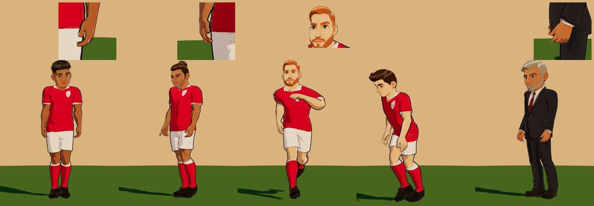
Look at the hands: open, not clawed. Stand-alone test, not a phone.In progress
The 2D match gets a re-skin in Style A (same frames, same timings).
Cut scenes move over.
Scenes load only the heads they need (now all 8, 1.8 MB).
Career 3D camera: smaller players, higher angle, room to drag
Players about 6% of the screen. Angle 48 to 50°. 40 to 45% of the pitch below the ball. No top-down corners. Smoother animation. New 3D | 2D button and settings cog in the match.
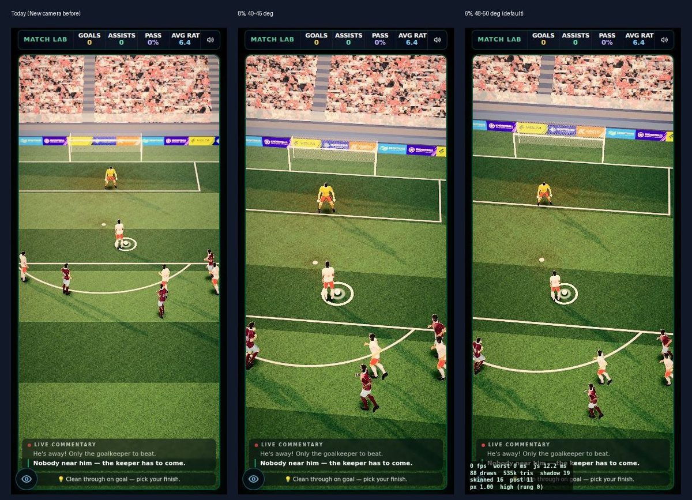
Left to right: before, players at 8%, players at 6% (chosen). Look at the grass under the ball.
Free Roam: the camera follows the ball, and you can CALL for it
Phone button or F on PC. Two Touch stick is out of the way.
Ball in frame
83% 61%
Ball in frame, away
82% 50%
Goal in frame
58% 97%
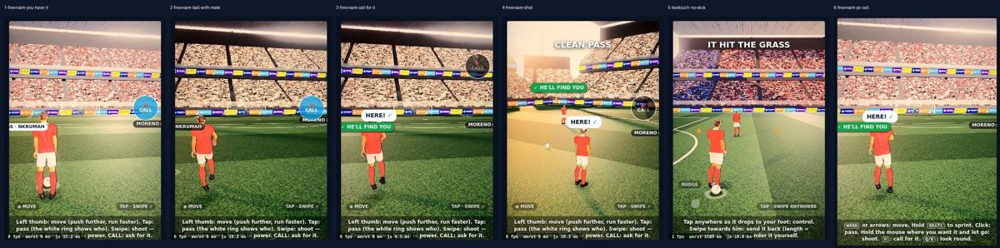
Free Roam frames. The goal is in view less often: the trade for following the ball. 93% once you have had it 1.5 s.
Your house in 3D
Six tiers, wardrobe and mirror, trophy cabinet, cars on the drive.
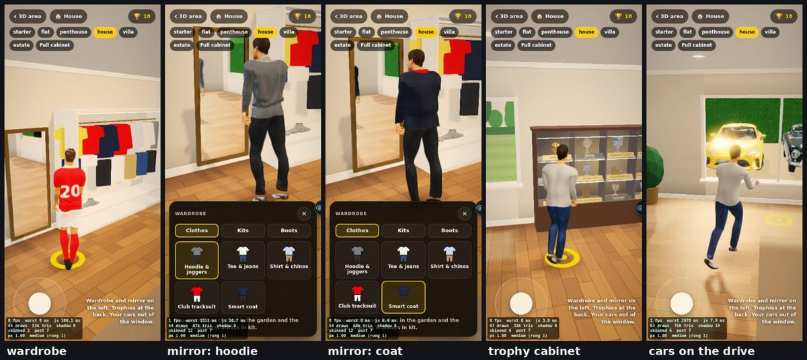
Room, wardrobe, cabinet, cars on the drive. Test page only.
Speed pass 2: same picture, less work
Plus: the speed manager no longer drops quality for one-off stalls (it went 1→2→3→4, now 1→2→1).
Career triangles
512k 946k
Shadow triangles
46k 232k
Career draws
80 98
Cut-scene draws
81 117
Garden memory
74 MB 86
Shop: Harry chose "Showroom + Feed"
Swipe up/down for categories, left/right for items, full-screen sharp pictures. Being built. New 2D shop with Higgsfield UI art came first, then four layout concepts.
Today
29%
A
92%
B
85%
C
61%
D
94%
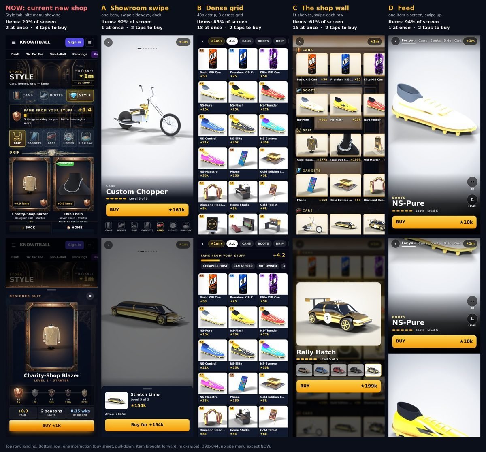
Today, then A to D. Bars show how much of the screen is actual items.
Home screen New: big stats, player centre stage
Rep, Fame, Goals and Assists tiles. Goal removed. Style A player going in.
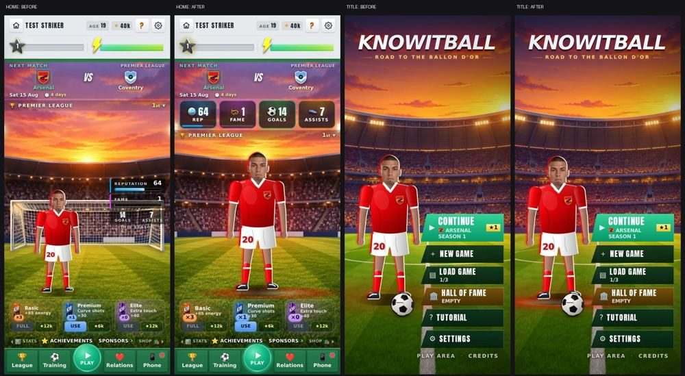
Old vs New.
Earlier in the 3D rebuild (8 Oct)
Headline: the real game now plays in 3D
The 2D game still decides every result. A 3D camera draws what it decides. Touches go to the 2D game. Switch: Settings → Look → "Match view 3D".
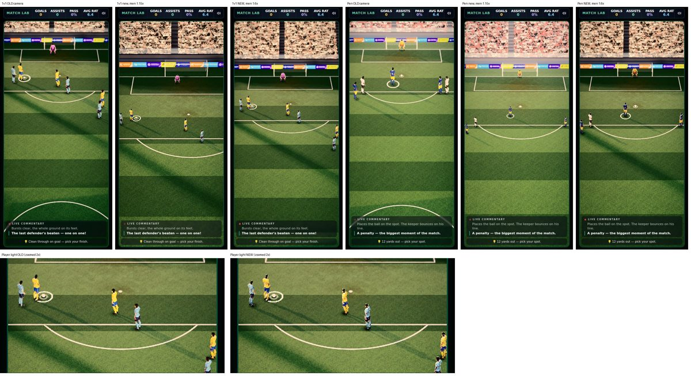
Old camera, men at 1.15×, men at 1.6×. Bottom: player light, old vs new.
Fixed
Keeper dived with no shot
About 3 dives a run → 0 in 60 runs.
Passes to a runner missed
Clean 14 m passes: 32 → 73 of 80. Passes now lead the runner.
Keeper missing on build-up chances
Now always in goal: 0 frames without him in 44,000.
3D stuck on round 2
The 3D view never saw your finger lift. Fixed. A drag also now aims the shot, not tilts the camera.
Free Roam keeper unstoppable
Shots on target that go in against a 70 keeper at 18 m: 2% → 23%. Corners 0% → 53%.
Keeper dive snapped flat
He now crouches and pushes off. The kick has a backswing and left-footers use the left foot. Feet no longer slide.
Shop player's head tilted
Head was held 13° to one side, skin too orange, camera twitchy (45.8° → 22.9° per 100 px).
Running neck and arms
Neck lean 11–17° → 5°. Wrist bend 82° → 12°.
Edges were blurry at Medium
Every quality level now smooths edges at 1.25× or more.
Close strikes now get a reflex save: goals per 10 shots 5.7 → 4.1.
Added
The 3D handbook and skill
See the start of this page. Rig files, concept pictures and test tools were rescued into the repo.
Real motion capture
36 real human motion clips. Feet slide at most 2.3 cm. Setting: "Motion: Mocap | Old". 18 more clips since: keeper dives, tackles, chest and thigh control, walk, sit, talk.
Cut-scene Director
One system turns a game event into a film scene. 16 event kinds, 18 camera shots, 9 places.
Style Testing page
Every look and scene side by side at /star-style-dev.
Day, Night and Golden hour looks
Night distance to the target look 2.48 → 0.72. Day 1.27 → 0.60 (0 = equal). Golden hour is the default.
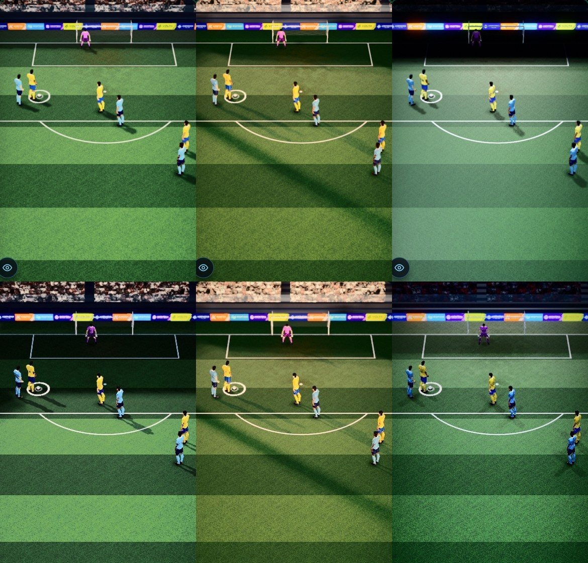
Top: your iPhone shots. Bottom: after. Left to right: Day, Golden hour, Night.
Pace and sprint
Stick push sets walk, jog, run, sprint. Pace 0 sprints at 20.2 km/h, pace 100 at 29.5. A full sprint drains about 6 s of stamina. New Pace Sprint drill (30 m with a chaser).
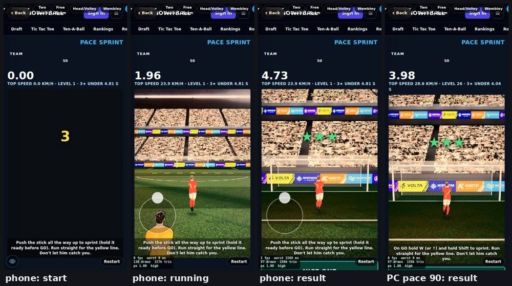
Pace Sprint on phone and PC.
Drill camera like a practice arena
Over your shoulder, turns by itself at most 60°/s. Two Touch grades each touch: Perfect, Good, Heavy, Scuffed. Back button on every drill.
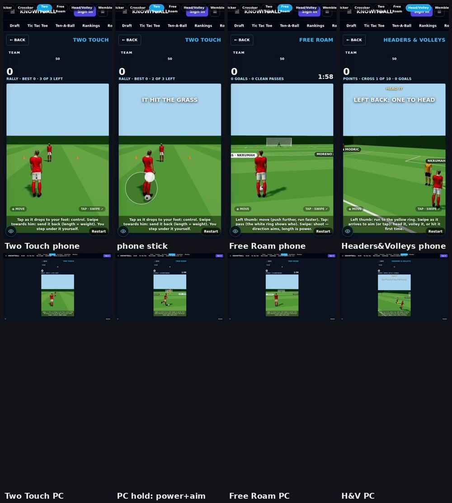
Top: phone. Bottom: PC.
Kicks by power
Soft kick is a side-foot. A full-power kick has a big backswing.
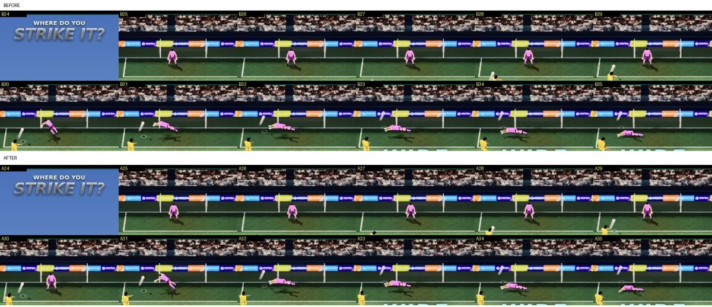
Dive: before he goes flat in one frame. After he crouches and pushes off.
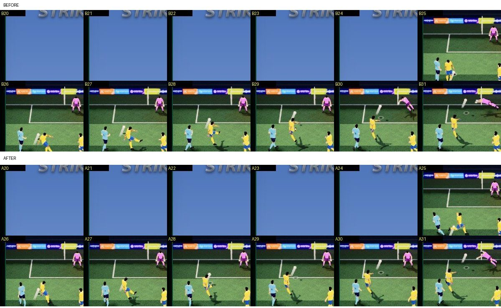
Kick: the leg draws back first.
Speed manager in every 3D place
Nothing gets lower until the phone is under 45 fps for 2.5 s. Still frames stay sharp. Admin frame meter with ?fps=1.
New 3D shop models
32 of 41 items are proper models: 6 cars, bike, jet, 9 homes, watches, jewellery, 7 boots, the can. New Family Car. 268 credits spent in total on shop models.
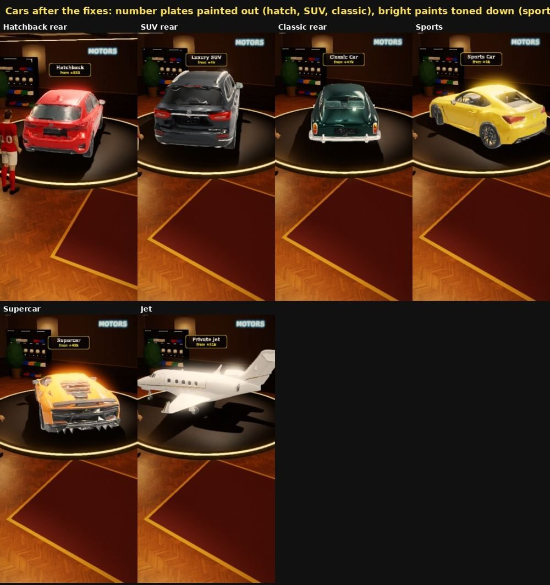
Shop cars, before and after.
Greener garden
Leaf trees, hay, flowers, golden-hour light.
Style A chosen
Harry picked cel-shaded as the standard look, then Stylised heads.
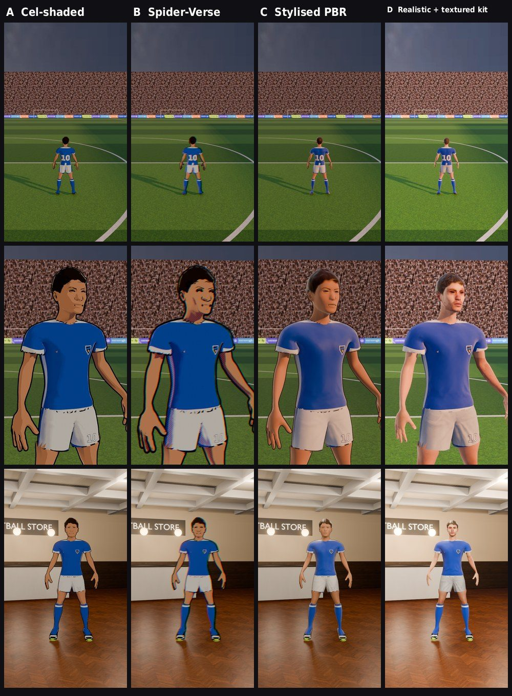
The style test: you picked A.
Changed
Men are bigger in the real 3D game
1.6× life size (later cut to about 6% of screen in the career view).
2D match: outfield men and ball at 0.8×
The keeper stays full size.
New chances out of Preview
Every phone is back on the team's own chances. New can still be picked by hand.
Primary look: Golden hour
Default time of day in the Real game.
Tried and dropped
Framing 3D like the 2D chance window gave more empty grass (75 to 80%).
Known issues
Garage car models are still a bit blotchy up close open
The estate horse doesn't move open
Bench freeze: the after-number is not measured not measured
Still nothing seen on a phone not seen
Career match revisit is about 2 s slower being fixed
A ~350 ms freeze when coming on from the bench open
The match engine is still in the first download blocked on Harry
Moving it needs a change to the one-engine check.
If the amber 3D ↻ shows often, memory is the cause fix in progress
Lag fix is in progress.
Style A shirt is flat colour next
Nothing this round has been seen on a phone not seen
Every picture is from a machine with no graphics chip.
The 3D | 2D button and the cog were never clicked in a browser not seen
Built and type-checked only.
A small white dot on the grass in the 3D match not traced
Present before and after the camera change.
Chance-start stalls still happen hidden
The speed manager now ignores them. They are not removed.
All 8 heads load in every scene (1.8 MB) fix next
Heavy on a first match on mobile data.
Shop Style tab look is not good enough being replaced
Harry: "70% of this isn't even the shop". The Showroom + Feed layout replaces it.
2D match: 4 moves can only be near-matched in Style A half fixed
Sprint, kick and the keeper dives. Their source files were never saved.
Garden: house and horse are still cartoon. Shop wall units never seen. open
Ginger head shows in the wrong hair colour open
Next
Harry plays the round on his phone
Career 3D camera, Free Roam, the house, the Home screen. Tune from what he says.
Build the Showroom + Feed shop
Finish Style A
2D match re-skin, cut scenes, only load the heads a scene needs, more suit heads.
Remove the chance-start stalls and fix the shop draw count
Leo carries on the open jobs in the handbook
Check these on your phone (ticks stay on this device)